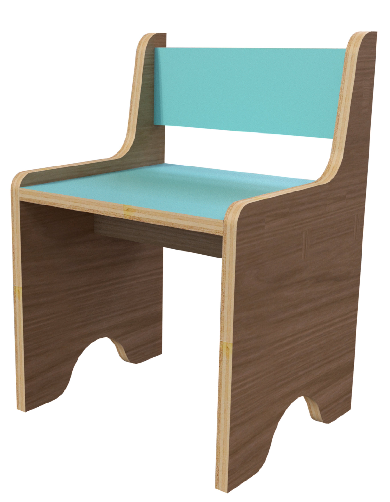

Pasante en el Área de Diseño
Tecsup
Marzo - Julio 2019
Av. Cascanueces 2221 - Santa Anita
FUNCIONES
- Implementación de nuevos recursos y estrategias para mejorar la experiencia de usuario en la inscripción de cursos virtuales.
- Diseño y fabricación de una porta tablet con herramientas de fabricación digital para el área de Servicios Educativos.
- Prueba de materiales y diseño a tráves de las máquinas de fabricación digital
Pasante en el Área de Diseño
Tecsup
Marzo - Julio 2019
Av. Cascanueces 2221 - Santa Anita
FUNCIONES
- Implementación de nuevos recursos y estrategias para mejorar la experiencia de usuario en la inscripción de cursos virtuales.
- Diseño y fabricación de una porta tablet con herramientas de fabricación digital para el área de Servicios Educativos.
- Prueba de materiales y diseño a tráves de las máquinas de fabricación digital
Módulo Silla

Impulsa el desarrollo cognitivo, a traves de las actividades de forma sedente que realice junto a sus padres.
Módulo Cubo

Impusa que el niño sea independiente y organizado con sus juguetes de esa manera mantener su ambiente en orden es para poder guardar los juguetes del niño.